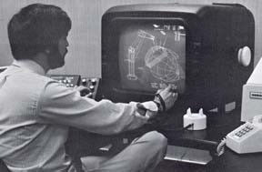
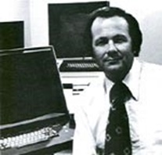
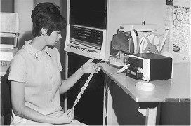
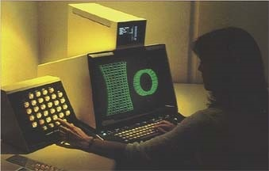
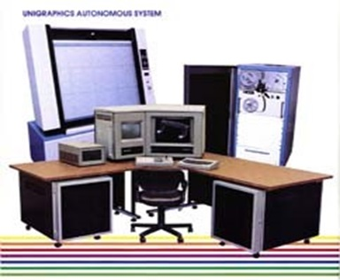
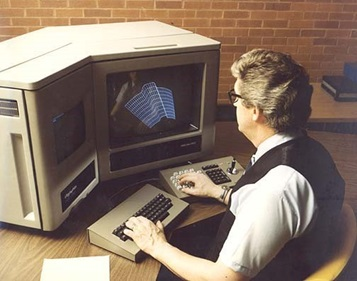
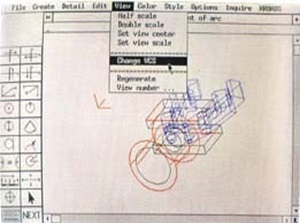
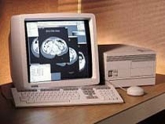
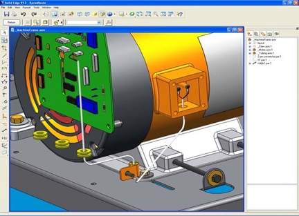

第19章：西门子和UGS
作者的注释：如下所述，这个组织多年来有着众多不同的名称。许多人仍然将其简称为UGS，尽管这个名称现在已不再正式使用，但我在本章中仍使用了这个名称。
麦克唐纳·道格拉斯自动化（McDonnell Douglas Automation）
要了解今天的西门子PLM软件组织和Unigraphics软件是如何发展的，就得回到位于密苏里州圣路易斯的一个名叫McAuto（McDonnell Automation Company）的组织，这是麦克唐纳航空公司的一个子公司。飞机制造业是首批使用计算机系统进行工程设计和分析的行业之一，麦克唐纳在上世纪50年代末就非常积极地开展了这项工作。它的第一个数控生产零件是在1958年制造的，计算机则在接下来的一年用于帮助设计飞机。
1960年，麦克唐纳决定利用这些经验进入计算机服务业，成立了威格软件公司（McAuto）。当年，该公司拥有258名员工和价值700万美元的计算机硬件。15年后，威格软件公司已经成为全球最大的计算机服务机构之一，拥有超过3500名员工和超过1.7亿美元的计算机基础设施。在接下来的十年中，威格软件公司继续增长，到1985年实现了10亿美元的收入和14,000名员工。该公司此时的最大单一客户是其母公司的军用飞机设计组。
20世纪60年代和70年代，威格软件公司开发了一个内部CAD/CAM系统，用于支持麦克唐纳的工程。该系统被称为CADD（计算机辅助设计和绘图），最初是在IBM 360/40计算机上实现的，配备了IBM 2250显示终端，大约开始于1966年。1967年，麦克唐纳飞机和道格拉斯飞机合并成立了麦克唐纳·道格拉斯公司（MDC）。
到1976年，该软件经过了15次修改，在IBM 370/168大型机上运行，使用IBM 3250显示器。还使用了Tektronix 4014和公司自己的DGS（分布式图形系统）终端。DGS由数字PDP 11/34或PDP 11/70计算机接口连接到Evans＆Sutherland Picture System II显示器。DGS在本地处理缩放和移动等图形操作，而几何构造则是在主机计算机上完成的。远程DGS系统与主机的通信速度相对较慢，只有9600 bps。麦克唐纳·道格拉斯一度使用了80个DGS系统，100个3250系统和数百个4014系统。
多年来，曾有一些有限的尝试将CADD推广给普通消费者。MDC的运营部门坚决反对将该软件销售给它视为直接竞争对手的公司，因此CADD，与洛克希德的CADAM不同，从未真正成为一款商业产品。少数商业客户包括Timex和Cessna飞机。后者之所以能够购买该软件，是因为其飞机与MDC生产的任何产品都没有竞争关系。使用该软件的竞争对手之一是诺斯罗普公司，但这只是因为它与MDC在F-18计划上是合作伙伴。该公司要求25万美元购买CADD软件的事实可能没有帮助。

McAuto公司的主要业务之一是为工程和制造业提供商业分时共享服务。这种活动的典型特点是提供远程批量有限元分析（FEA）服务。McAuto是最早提供远程图形终端用于准备FEA模型分析并以图形方式查看结果的公司之一。此类服务使用的典型终端是Tektronix 4014，软件是一个名为FASTDRAW的内部开发包。
客户可以使用FASTDRAW构建模型，使用像ANSYS或MSC NASTRAN这样的程序进行分析，然后查看结果。最终，该程序被移植到Digital VAX计算机上，并作为Unigraphics的附属产品销售。 McAuto的总裁Joe Quakenbush和负责Unigraphics活动的副总裁John Clancy约翰·克兰西，于20世纪80年代初在任。 1983年2月，国家CSS的前总裁罗伯特·菲舍尔成为McAuto的总裁，取代因健康原因退休的Quackenbush。 Clancy成为行业/产品管理副总裁。
Unigraphics始于一家名为United Computing的公司
这家公司由John Wright和几位合伙人于1963年创立。他们的第一个两间房的办公室位于加利福尼亚州托兰斯市一家理发店的上面。几年后，公司搬到了几英里外的卡森。新设施以前曾是一家邮局，有时会有人来买邮票或寄包裹。
United Computing的第一个产品是UNIAPT，于1969年推出，是APT（自动编程工具）的小型计算机版本，如第3章所述。 APT是一种零件编程语言，用于计算随后进行后处理并打印到纸带上的工具路径。然后将纸带读入数控机床，程序控制机床切割器的运动，产生用APT语言描述的零件。

UNIAPT是最早直接销售给最终用户的NC编程系统之一。此前，大多数公司使用由大型供应商（如McAuto和UCC（大学计算公司））提供的分时共享服务来创建其NC程序。 UNIAPT软件相当密切地遵循基本的APT原则。 APT命令是通过键盘输入的，没有像今天我们所知道的图形反馈。该系统确实具有绘制结果的能力。但是，可以使用名为USURF的可选模块加工中度复杂的曲面。

联合计算是最早从Pat Hanratty的制造和咨询服务公司（见第15章）获得ADAM软件许可的公司之一。据说这是全球独家许可，除了日本。由于Hanratty有自己定义“独家”的方式，因此不清楚合同对双方有什么限制。尽管最初的ADAM版本是由MCS开发的，可在REDCOR RC-70小型计算机上运行，并配备了Computek终端，但该代码旨在机器无关。联合计算相当迅速地将软件移植到General Automation SPC-16小型计算机和Tektronix显示器上。他们还添加了一个菜单驱动的用户界面。
软件UNI-GRAPHICS于1973年10月在底特律希尔顿酒店举办的制造工程师协会CAD/CAM II展览会上推出。这些展览会是最终成为AUTOFACT的先驱。该软件提供了基本的二维建模和绘图功能。该公司将这个新软件宣传为UNIAPT的图形前端。当时，联合航空公司只有六名程序员在开发UNI-GRAPHICS。
除了SPC-16迷你计算机之外，典型的配置还包括Tektronix 4010或4014终端、用于命令和消息的字母数字显示器、一个32个按钮的程序功能键盘、一个数位板和笔和一个Tektronix 4631硬拷贝单元。Tektronix终端上的光标控制通常使用一对拇指轮开关或操纵杆（如果不使用数位板）。1974年8月，该软件推出了多用户版本，使用General Automation SPC-16/65，并将软件包重命名为Unigraphics（不带连字符）。
1974年9月，联合公司将其第一套Unigraphics系统销售给新墨西哥州洛斯阿拉莫斯国家实验室，但由于该公司添加对Vector General图形终端和Xynetics平板绘图机的支持，该系统的安装被推迟至1975年初。第一台工业安装是在印第安纳州拉斐特的一个阿科阿设施，紧随其后的是在德克萨斯州科珀斯克里斯蒂的美国陆军兵站。
1975年2月，Unigraphics硬件升级为General Automation 1830系统，并为图形工作站命名为“Model 319”。图19.4显示了典型的配置。

1975年9月，United Computing 推出了其第一个集成NC产品， Graphic Machining。尽管MCS的ADAM系统有NC模块，但存在问题，United 决定开发自己的软件，而不是修复ADAM代码。最终，这种NC体验成为公司技术支柱之一。
1976年4月，麦克唐纳-道格拉斯公司收购了联合计算公司。该公司留在卡森，并作为麦克汽车公司的子公司运营。
McAuto时期的Unigraphics
从1976年开始，麦克唐纳-道格拉斯公司和后来的Unigraphics所有者继续增强这个核心软件产品以及基于它构建的大量应用程序。首个重大升级之一就是增加了一个用户编程语言GRIP（GRaphics Interactive Programming language）。虽然这种功能的基本代码已经包含在United从MCS许可的ADAM软件中，但是需要大量的软件工作才能使其有效地工作。多年来，GRIP将与其NC功能一起成为与其竞争对手不同的关键特点之一。
当McAuto收购联合计算公司时，面临的主要问题之一是Unigraphics运行在General Automation计算机上。大多数工程组织并不喜欢这些计算机，因此McAuto从1976年6月开始交付Data General Eclipse版本。该公司在较短的时间里已经在较小的数据通用Nova系统以及Digital PDP-8上提供了UNIAPT。虽然Data General有一个实时操作系统RDOS，但United开发了自己的操作系统TSS（Time Slicing System），允许多个用户运行独立的Unigraphics会话。公司认为有必要这样做，因为RDOS仅允许在任何一时刻运行单个进程。1977年初，Digital PDP-11/70实现了Data General版本的Unigraphics。
第一次Unigraphics用户组会议于1976年12月在联合航空的卡森设施举行。出席的九家公司中包括ALCOA、开特彼勒、哈里斯公司和洛斯阿拉莫斯国家实验室。第二年在8月的用户会议上，有25名与会者，会议不得不移到当地的道格拉斯飞机工厂。
1977年3月，该公司成功地将Unigraphics引入国际市场。英国彼得伯勒的Baker Perkins有限公司是一家食品加工设备制造商，购买了一个四座位Unigraphics系统。软件运行在具有128KB主存储器、96MB可移动磁盘驱动器、9轨磁带备份系统、纸带冲床/阅读器和Calcomp 960绘图仪的Data General S200上。包括Unigraphics软件在内的完整系统售价超过40万美元。S200计算机需要一个空调房间来放置CPU和磁盘驱动器，而Tektronix终端需要为用户提供受控照明。
1978年4月，该公司推出了Unigraphics版本R1，其中“R”代表“重组”。新软件支持256个数据层和图形实体的链式选定。R2于1978年7月发布，仅仅三个月后是R3。R4于1979年3月发布。后者主要是修复错误。当时还不可能简单地修补现有版本。为了修复bug，软件公司必须发运完整的软件副本。这种方式修复小bug是很麻烦的。
大约在同一时间，汽车制造商McAuto对仍在运行的联合计算公司进行了一些重大变革。原有的联合计算公司被关闭，而Unigraphics产品线成为McAuto新成立的CAD/CAM部门的一部分。该部门还包括其他与设计相关的活动，如CADD、Fastdraw和一些DNC软件。约翰·赖特和其他早期的联合员工离开了公司，而由MDC的道格拉斯飞机部门聘用的早期CAD先驱乔治·迈斯特接管了Unigraphics业务。迈斯特实际上曾与帕特·汉拉蒂一起在道格拉斯飞机公司开发用于设计商用飞机电线绑带的软件。
新的McAuto管理层下的第一个版本被称为D1。 “D”代表双精度数学。 1980年2月，Unigraphics开发运营部门搬到了加利福尼亚州赛普雷斯的一个新设施。当时，它周围大部分都是草莓田，现在已经不存在了。截至1980年，McAuto的营收超过4亿美元，拥有5500名员工，支持超过20,000个远程终端和近300台计算机。在公司的收入中，有4600万美元涉及CAD / CAM系统。虽然这使它成为当时收入最高的公司之一，但由于超过70％的收入由其内部飞机部门产生，导致很少有外部人士知道该公司试图销售什么。 Unigraphics用户组在这个时候开始变得更加重要。他们在1980年8月开始发行名为“ Interact”的通讯，由Harris Corporation的Dave Berry担任编辑。当时，用户组的官员是Caterpillar的Tom Meagher担任主席，Harris的Don Leake担任副主席，Valeron的Christ Tayon担任秘书/财务官。
新McAuto管理下的Unigraphics开发在1980年加速。9月，D2版本发布，引入了独立于视图的坐标系统，以及新的NC和几何编辑模块，包括创建和编辑雕刻表面的功能。此版本还引入了一个称为GFEM的有限元建模模块。从此，Unigraphics成为了有效的三维设计和制造系统。维护版本D2.1于1981年2月发布，支持数字VAX计算机。该公司宣布还将支持Data General的32位系统。接下来的D3.0版本在1982年4月发布，是第一个支持光栅显示和彩色（最多七种不同颜色）的Unigraphics软件。
1981年10月，John Clancy晋升为McAuto的副总裁，负责公司的所有CAD/CAM活动。其结果是McAuto位于圣路易斯的总部成为了Unigraphics的全球总部。George Miester继续管理位于Cypress的Unigraphics开发和支持运营，向Clancy报告。此时，该公司已经在MDC外安装了约100个系统。
Unigraphics在数控领域非常强大，因为这是United Computing开始的领域，该公司声称拥有1000多个后处理器。根据1981年11月的CAD/CIM警报报道：“Unigraphics被认为是一个真正的‘沉睡者’——一个很好的产品，但出于某种原因不为人所知——尽管它是3D CAD/CAM领域的佼佼者。”
MCAUTO自动图形会展展位是最引人注目的之一。在NCGA’81和其他地方，MCAUTO在其CAD/CAM系统旁边安装了DNC铣床，并实际加工了在图形系统上创建的零件！我们认为UNIGRAPHICS在用户友好性方面“优秀”，在三维机械设计方面“优秀”，在原理图绘制方面“较差”，在市场身份方面“极其缺乏”。这个系统对于任何寻求CAD/CAM系统进行三维机械设计和绘图的人来说都值得认真考虑。
低成本系统
在20世纪80年代初，CAD/CAM系统供应商非常感兴趣开发成本更低的系统，特别是对于客户只想购买1-2个位置的情况。由于大多数早期系统都是围绕着一个支持多达十几个终端的小型计算机核心构建的，因此单个位置配置的入门成本通常为20万美元或更高，特别是如果小型计算机类似于VAX 11/780之类的。MCAUTO提供较低成本替代方案的初步尝试是ADS-100（自治设计站），起价为10万美元（相当于今天的20万美元左右）。
ADS-100是一款完整的独立系统，包括Data General S140计算机、25MB硬盘存储器、一个8英寸1.2MB软盘驱动器、Megatek光栅显示器、一个字母数字显示器和一个单用户Unigraphics软件许可证。还有一个存储管显示版本的ADS-100可供选择。正如图19.5所示，该系统甚至包括家具。硬盘用于存储操作系统和Unigraphics软件，而设计文件存储在软盘上。

一种无计算机部分的 ADS-100 变体被营销为 DDS-100（Dependent Design Station）。这些单用户系统旨在连接到中央 CPU。这个单位后来被简称为 D-100。

Unigraphics II
1982年中期，Unigraphics基本上仍然是原始的MCS ADAM软件，但由United Computing和随后由McAuto进行了重大修订。开发经理当时是汤姆·拉弗蒂（Tom Rafferty），几年后他作为Mosaic项目的领头人加入了Auto-trol Technology。拉弗蒂在长滩港的玛丽皇后号上召开了一次高级技术经理会议，讨论了对Unigraphics进行重大改进的需求。接下来一个月的其他会议导致了一个重大的开发项目的启动，最终产生了一款名为Unigraphics II的全新产品。在内部，这个小组被称为“白雪公主和七个小矮人”。除了拉弗蒂，小组还包括：
- 乔治·艾伦（George Allen）
- 查克·格林斯塔夫（Chuck Grindstaff）
- 维克·汉布里奇（Vic Hambridge）
- 克里斯·梅林（Chris Mehling）
- 加里·纽尔（Gary Newell）
- 保罗·西金（Paul Sicking）
- 威爾·瓦倫蘇埃拉（Wil Valenzuela）
約翰·貝克在其網站上指出，“Dwarves” 中除了在2000年春季去世的Gary Newell以外，所有人都還在Unigraphics組織中[8]。事實上，截至2007年中期，Chuck Grindstaff擔任負責UGS產品開發和市場營銷的執行副總裁。
在Unigraphics II的工作開始之際，該公司繼續發布現有Unigraphics產品的新版本。1982年9月宣布發布版本D4.0，實現了與NC應用程序配合使用的GRIP擴展，IGES支持以及三維質量特性。該軟件於1983年2月開始發貨。版本D4.1於1983年中期發布。它充分利用了基於Unigraphics II進行的工作的32位架構。在Digital和Data General計算機上充分利用32位功能使性能大大提高。這是原始Unigraphics中包含任何重大增強的最後一個版本。雖然有D5.0和D6.0版本，但它們主要是維護版本，特別是針對舊的16位計算機系統的用戶。[9]
1983年8月，McAuto宣布推出Unigraphics II版本1.0。早期軟件現在被稱為Unigraphics I。新軟件涉及幾乎完全重構零件數據模型，包括添加聯想關係。此外，還有大量增強和新方法來創建模型和製作圖紙，包括：
- Unigraphics 文件管理系统 (UGFM)
- 新视图和布局功能以支持草图
- 透视图
- 视图依赖编辑
- 普遍部分合并作为模式的替代
- 用户定义属性
- 制图功能的重大改进
- 双重标注
- 关联维度、标签和其他注释
- 对象分组
- CAM 和 GFEM 的主要增强
- 首次支持钣金操作
- 改进的用户宏编写工具
- 用户可定义的绘图标准
- 能够机械加工多个表面。
- 基于FORTRAN的后处理器。
- 更好地访问Unigraphics数据库以供用户应用。
Unigraphics II在32位Digital VAX和Data General MV系统上实现。虽然旧的Tektronix显示硬件得到了有限的支持，但明显这些设备正在被 phased out 作为支持终端。实际的非测试软件交付给客户直到1984年初才发生。Unigraphics II软件可以读取旧的Unigraphics数据，但反过来则意味着关联性信息会丢失。
Unigraphics II 的主要缺陷是缺乏隐藏线方法和绘制阴影图像的能力。Unigraphics II 在市场上获得了广泛的认可，例如，Continental Can 在 1984 年后期下了一份价值 350 万美元的 40 台工作站系统订单。
Unigraphics 终端和平台支持
在 20 世纪 80 年代初，Unigraphics 支持 Digital 和 Data General 的 16 位和 32 位计算机。终端是 Tektronix 4014，带有一个 5 英寸的字符显示屏，通常安装在 4014 顶部和一个 32 个按钮的功能键盘上。无论是本地还是远程，它们都通过 9600bps 的链路连接到主机计算机。在该期间，当 Unigraphics 系统基于小型计算机时，软件是按“每个系统”销售的。因此，随着安装更多终端，每个位置的成本显着下降。
在 1981 年 11 月的芝加哥 AUTOFACT III 上，McAuto 展示了一个新的 Unigraphics 用户界面和新的系统配置，包括一个 Data General Eclipse C-130 计算机、一个 Megatek 彩色光栅显示器和一个售价略低于 10 万美元的 12 英寸字符显示屏。[12]在本节中描述的所有 McAuto 终端中存在的一个问题是，它们通过标准的 9600bps 串行接口与中央计算机进行接口。这经常对性能产生负面影响。唯一的例外是 D-135，可以将这个速度提高到 19600bps。
在20世纪80年代中期，麦克唐纳道格拉斯的主要Unigraphics平台是来自Data General和Digital的小型计算机，包括使用Megatek购买但由麦克唐纳道格拉斯组装的图形终端。在1983年2月的第七届Unigraphics用户会议上，Data General宣布了MV1000，当时支持Unigraphics最强大的计算机。它最多可以配备18GB的磁盘存储器和16MB的主存储器。McAuto估计，完全配置的MV10000可以支持12到14个Unigraphics终端。
在1983年中期，McAuto推出了一款名为D-90的低成本单色栅格工作站，可用于Data General或Digital计算机。售价为17,500美元。它基本上旨在替换使用Tektronix存储管显示器的终端。
该公司还推出了一个围绕32位Data General MV-4000计算机构建的新低端系统。称为M-150，带一个工作站售价为98,000美元，两个工作站售价为115,000美元。与早期的ADS-100不同，M-150可以处理高级软件，如立体造型和加工多个表面。
McAuto在与哪些图形供应商合作方面完全是不可知的。在1983年底，它与Evans＆Sutherland签订了PS 330显示器的合同，然后在1984年底推出了一款名为D-2300的新工作站，基于Megatek的Merlin 9200，分辨率为3072 x 2304。该设备支持线框图和阴影图像的实时平移，缩放和旋转。几乎一年后才开始交付任何D2300。它们价格过高，每单位超过60,000美元（不包括CPU或任何软件）并且有些不可靠。
1984年5月，McAuto推出了两种新的设计站——D-120C和D120CE型号。其中，C显然代表彩色。同时还有这些栅格终端的M（单色）版本，具有相同的功能和彩色系统。根据UGS历史网站的介绍：“这两个新的单元基本上都是升级版的D-100，并且是最后一批作为独立家具包装销售的设计站。‘E’型具有扩展的图形功能，支持本地硬件动态旋转线框图像，以及使用操纵杆控制的平移和连续缩放功能。虽然这些站仍然可以与Unigraphics I一起使用，但是很多增强功能，例如增加的图形内存、局部动态效应、背景的灰度控制等，只有在Unigraphics II中才能支持。”
D-120C系统的价格为48,000美元，而D-120CE系统的价格为53,000美元。请注意，这些系统还可以添加可选的着色器硬件，使用户能够显示UniSolids模型的具有阴影效果的图像。这些图像是静态的，并且用户必须对模型进行软件渲染，然后图像将自动显示，实际上是连接到公共显示屏的第二个图形驱动程序。这也是从UniSolids模型创建隐藏线图像的唯一途径。在此之前，用户必须购买一个特殊的第二个终端，只用于显示阴影图像，并且必须在开始渲染操作之前手动切换输入。
1985年初，推出了一种新的终端——D-125。它是一种模块化单元，与D-90类似，键盘和PFK采用塑料外壳。该公司没有提供D-125的单色版本，而是转而支持彩色显示。基本的D-125售价为43,000美元，而具有扩展图形功能的D-125CE的价格为48,000美元。
接下来是1986年中期推出的D-135。除了19,600 bps的接口外，该终端还配备了1MB的图形内存，能够处理比D-125机器更复杂的图像。D-135是最后一个带有Unigraphics标签的重要终端。
1980年代后期，该公司减少了对特殊配置的硬件系统的依赖，并开始支持行业标准的UNIX工作站，如下所述。到1990年，该公司支持来自Digital、惠普和Sun Microsystems的各种工作站。
麦克唐纳道格拉斯和AEC市场
McAuto长期以来一直致力于向土木工程用户提供时间共享服务。正如第5章所述，它是最早提供MIT ICES软件的组织之一。在McAuto内部，AEC活动被称为EDAC部门，即工程师、设计师、建筑师和建筑师。最初，McAuto几乎没有开发AEC软件，尤其是建筑市场的软件。与此同时，1969年成立的英国剑桥应用研究公司正在开发两个软件包供建筑师使用，即建筑设计系统（BDS）和图形数据系统（GDS）。1981年3月，McAuto与应用研究公司签署了独家许可协议，以市场GDS和BDS。几年后，在1985年中期，McAuto以1250万美元的价格全部收购了该公司及其软件。
GDS是一个相当简单的绘图软件包，特别适用于建筑和工程图纸。BDS是用于便于设计重复建筑物（如学校和医院）的软件。它不能处理斜屋顶、曲线墙壁或不是直角相交的墙壁。BDS是一个概念设计和建模软件包。为了生成工作图，数据必须转移到GDS。另一方面，没有将GDS数据转移到BDS的链接。
最初，该软件在Prime电脑上运行，使用Tektronix 4014图形显示终端。在1981年，该软件价格相当昂贵。据A-E-C自动化快讯报道，GDS软件在Prime 150上的两个座位价格为73,000美元，而在Prime 550-2上的价格为140,000美元。同样系统上的BDS软件价格为150,000到287,000美元。这仅仅是软件的价格，并不包括任何硬件。随后几年，价格大幅下降。1983年，一个入门级GDS系统包括一个Prime 2250计算机和一个Tektronix 4114终端，售价仅为100,000美元，而BDS软件则需要额外支付38,000美元。四个工作站的系统价格为191,200美元。公司从未完全解决的一个战略问题是，虽然1983年有数字版本，但AEC产品主要只提供在Prime电脑上，而Unigraphics则可用于数字和Data General系统。公司在将现有的分时共享软件移植到Prime平台方面也较慢。例如，到1985年，COGO已经从分时系统移植到了数字小型计算机，但还没有移植到主要GDS和BDS客户所使用的Prime电脑上。
1984年初，Bill Vickroy建立了一个新的AEC部门。当时，该公司取得了一大成功，原先的工程公司HNTB（前身为Howard，Needles，Tammen＆Bergendoff）决定在33个办公室安装基于VAX的GDS系统。几个月后，该公司宣布GDS也将在Digital Micro-VAX上提供。
1985年中期，McAuto与英国Horsham的Moss Systems签署了一份协议，以营销该公司的地形建模和公路设计软件包MOSS。与此同时，Auto-trol Technology也与Moss Systems签署了分销协议。
IBM既是竞争对手，也是合作伙伴
虽然IBM在整个CAD市场上与McAuto竞争，但这并没有阻止公司将McAuto签约为IBM 4361计算机的经销商。 1984年12月5日，McAuto宣布将把Unigraphics II软件移植到IBM平台上。这个由一个4361 Group 5处理器，一个30MB磁盘驱动器，四个5080终端，包括NC功能的Unigraphics II软件和一个IBM 7375 plotter（与HP 7585相同）组成的系统售价为60万美元。 McAuto计划只销售成套系统，并宣布不会销售4361的非捆绑软件。
虽然最初的计划只是利用5080的本地图形功能的有限部分，但公司确实使用了主显示器而不是单独的字母数字显示器来显示菜单。 McAuto宣布，到1985年底，它将把许多图形功能卸载到5080上。这个版本的Unigraphics并没有取得很大的进展，因为IBM的销售人员不太愿意在将一个软件供应商带入顾客时，该软件供应商还出售其他计算机平台。
McAuto在与IBM解除协议之前销售了11个使用4361的Unigraphics系统。最终，11个系统中的10个转换到数字或数据通用计算机，并保持Unigraphics用户[23]。
游戏开始了
本章涵盖的公司在过去25年中更名次数比行业内其他公司都要多。1985年初，麦克唐纳·道格拉斯（McDonnell Douglas）放弃了麦克自动化（McAuto）的名字，创建了几家专业公司，每个公司都有自己的名称和身份。这些公司包括麦克唐纳·道格拉斯航空航天公司（McDonnell Douglas Aerospace）和麦克唐纳·道格拉斯信息系统公司（McDonnell Douglas Information Systems）。
作为后者的一部分，CAD操作被称为CIMTECH，即计算机集成制造技术公司。但是这种名称没有持续多久，在1985年4月，CIMTECH更名为麦克唐纳·道格拉斯制造业系统公司（McDonnell Douglas Manufacturing Industry Systems Company或MISCO）。几个月后，约翰·克兰西成为了麦克唐纳·道格拉斯信息系统集团的总裁，这是McAuto的新名称。乔治·迈斯特搬到了圣路易斯，担任MISCO的副总裁兼总经理。
公司机械部门的其他关键人物包括：
- 阿特·弗朗西斯 （Art Francis）- 副总裁，市场营销
- 盖伊·罗斯 （Guy Rose）- 销售副总裁
- 菲尔·克雷特 （Phil Crater）- 运营副总裁
- 汤姆·拉费蒂 （Tom Rafferty）- 研发总监
AEC集团中的对应人员是：
- Gary Alexander – 高级副总裁兼总经理
- David Lonsdale – 副总裁，工程服务市场营销
- Ray Pittman – 工程服务主任
- John Purcelli – 副总裁，运营
- 约翰·瓦伦蒂诺 - 国家销售副总裁
- 约翰·爱默生，AEC开发经理
公司的AEC部分也没有免于“换名游戏”的影响。在1988年5月，当时被称为建筑、工程和建造系统公司的部门更名为“建筑环境集团”。后来，又改名为“建筑环境技术”。这两个部门都是麦克唐纳道格拉斯的系统集成公司的一部分。
这个名字又在1987年初再次更改为麦克唐纳道格拉斯制造和工程系统公司，由克兰西担任总裁。此后，它通常被简称为M&E。
UniSolids和Parasolid
UniSolids于1982年初由麦克唐纳·道格拉斯公司开发，基于罗切斯特大学的PADL（Part and Assembly Description Language）。 PADL-1是一个CSG（构造实心几何）建模器，通过组合和减去实体原语来创建实体模型。 该软件的1982年演示版本仅处理沿X、Y或Z轴定向的块和圆柱。
它从未出售，但证明了该概念是可行的。
此实体建模软件首次公开展示是在1982年的费城AUTOFACT会议上。麦克唐纳公司的员工组织了非常令人印象深刻的UniSolids演示。根据Baker的说法：利用UniSolids设计了自由钟的模型，并传递给UniGraphics进行工具路径创造，使用GRIP NC进行后处理，然后通过McAuto的DNC系统转移到3轴铣床。在那里，一个机器人（使用Place软件进行编程）将泡沫板块放入铣床的自动夹具中，将它们机械化成自由钟的形状（包括裂缝）然后机器人取出完成的块，并将其放入一个盒子中，盖上盖子，将完成的包裹交给McAuto演示者，他将其展示给观看演示的人群，该演示每小时重复一次。
UniSolids的1.0版本于1983年5月开始向客户提供，它是一个独立的程序，最初与UniGraphics不太紧密地集成在一起。例如，UniSolids不支持Unigraphics中包含的一些高级曲面定义。从UniSolids模型中制作图纸很困难，将二维的UniGraphics形状纳入UniSolids模型也同样困难。UniSolids的售价为5万美元，最初仅在数字VAX系统上提供。当它于1983年9月发布时，改进了性能的1.1版本还支持Data General MV系统。此后，在1984年11月发布了2.0版本，该版本使用户能够导入Unigraphics轮廓并将其用于挤压实体模型。
1988年，麦克唐纳·道格拉斯公司从盐湖城的Evans＆Sutherland收购了Shape Data。E＆S主要是硬件制造商，其主要市场是飞行模拟。因此，公司收购形状数据的原因并不是很明显，其主要产品是1975年发布的实体建模器Romulus。在此收购时，Shape Data的最新软件是一个名为Parasolid的边界表示或B-rep实体建模器，它不是最终用户软件，而是其他软件公司可以在其产品中使用的组件软件。在接下来的几年中，Shape Data的资源被用于将Parasolid技术添加到Unigraphics中。他们做得很好。Unigraphics 7.0版于1989年12月发布，其中包括名为UG Solids的选项。与Unisolids不同的是，它与Unigraphics数据结构紧密集成，就像公司的曲面建模技术一样。
与竞争系统和早期的Unisolids软件包不同，不需要从曲面定义到实体或反之间的数据转换。实体模型的图形操作与线框模型的操作没有什么区别。从线框和曲面设计向实体设计的转换可能是当时业界最好的。执行草图或NC编程的操作员不需要UG Solids许可证，除非他们要对模型进行更改。
赶上PC CAD浪潮
1985年10月，麦克唐纳·道格拉斯公司宣布成立一个新组织，即PC生产力系统(PCPS)部门，并计划推出价格为2000美元的Unigraphics I的PC版本。但事情并没有按照这样的方式发生。该公司的第一个PC软件包是一款名为Crossroads的产品，于1986年在NCGA（计算机图形和应用国家大会）会议上推出。Crossroads是一种融合了新软件、移植自Unigraphics和授权软件的产品。基本几何功能来自Unigraphics，而图形用户界面使用了Digital Research的GEM DESKTOP。该软件适用于需要额外内存、浮点协处理器、图形卡和20MB硬盘的IBM PC/XT和PC/AT计算机。Crossroads是一款具有各种表面类型的三维图形软件，包括规定和样条曲面。在最初的实现中，这些曲面只能用于计算质量属性。未提供用于加工Crossroads设计零件的NC软件，这进一步限制了该软件包的市场营销。从用户界面的角度来看，它与当今基于PC的系统非常相似，如图19.7所示。

麦克唐纳·道格拉斯计划通过新PCPS组织来营销和销售Crossroads。实际销售由经销商网络处理，而不是公司自己的销售队伍，最初的销售价格为2,995美元。该产品的发货时间比最初计划的晚了大约五个月，于1986年8月开始发货。到年底，公司只销售了250份，价值可能会达到75万美元的零售价。可能由于产品销售不佳的原因，该公司将PC生产力系统组与其其他机械和AEC CAD操作合并。计划继续通过经销商渠道销售Crossroads，但到1987年6月，麦克唐纳·道格拉斯已经削减了该产品的广告预算。
《Computer Aided Design Report》在其1987年6月的一期评估了该出版物所执行的机械PC CAD软件的广泛评估。Crossroads表现不太好，评为MCS的Anvil 1000、AutoCAD和Computervision的MicroDraft之后，但仍领先于Intergraph的MicroStation。
“Crossroads被认为是一个设计不良的产品。很少有工程师能在基于PC的系统中有效地利用三维模型。三维技术用于设计研究、装配建模、N/C编程和有限元分析。然而迄今为止，《十字路口》没有提供这些能力……在使用产品后，明显可以看出它的销售不佳……如果《十字路口》能以合理的方式与麦克唐纳道格拉斯公司的Unigraphics II集成，它可能会有第二次机会。作为更强大系统的卫星，它仍然可以发挥作用。”
在一份年中报告中，Daratech没有将 Crossroads 列为前十大PC CAD软件之一——它只是将其与“其他”软件混为一谈。
由于销售不佳，麦克唐纳道格拉斯公司在1988年2月放弃了Crossroads。事后看来，Crossroads的问题在于，当时的PC根本没有足够的处理能力来充分处理软件包的三维能力。当用户为PC添加内存和其他性能增强功能时，成本可能不比一些低端UNIX工作站低多少。
Unigraphics II 成熟
在推出一年半的时间里，客户从Unigraphics I向Unigraphics II转换的速度较慢。这一转变在1985年3月加速，当公司开始运送带有改进性能和可靠性的Unigraphics II2.0版本时。2.0版本还包括机构模块、改进的NC功能和改进的默认操作定义程序。最后一个完整版本的Unigraphics I（D6.0版本）于1985年8月发送给客户。
1985年，Unigraphics业务部门好像在经过1984年大约1.04亿美元的收入之后加速了。该软件在Digital的新高端VAX 8600系统上可用，并且首次提供非捆绑销售的软件。金属建筑制造商Varco-Pruden，仅以330万美元购买软件。到1985年中期，有377家公司使用Unigraphics系统，大约一半运行Unigraphics I，另一半使用Unigraphics II。约57％使用数字化电脑，其余使用Data General系统。
1985年11月，版本3.0发布，其中包括增强的可视化功能，包括基于Brigham Young University的BYU-Movie软件的新软件包UniPIX。该程序创建Unigraphics模型的高质量图像。当时公司被称为MISCO，还开始出货由用户提交的GRIP程序。它被称为GRIP International Library。最初，库存磁带分发给客户。后来，它被放在CD-ROM上，并随Unigraphics软件一起分发。
1986年2月，在加利福尼亚州长滩举行了第10届Unigraphics用户会议。尽管先前的用户会议侧重于解决从Unigraphics I到Unigraphics II的过渡问题，但这次会议集中于新的软件包。MISCO还利用这次会议宣布UniAPT将不再受支持，维护费用也将暂停。实际上，在Cypress的技术人员拥有UniAPT专业知识，并在非正式基础上帮助用户，可能一直持续到1995年。
1986年3月，公司宣布Unigraphics II ACCESS-50，使用户可以从个人电脑访问中央计算机上的Unigraphics软件。ACCESS50使用与PC Productivity组使用的相同的Digital Research GEM DESKTOP。Unigraphics II Version 3.2标志着公司的重要转变。它包括Digital VAXstation II / GPX的支持，这是软件首次运行的商业工作站级别产品。
1986年秋季，Unigraphics II正以相当快的速度升级。已经添加了自动有限元网格生成软件、复杂的表面修剪和更全面的装配设计。也许最重要的技术发展是在1987年晚些时候推出Unigraphics软件, 它可以在基础几何形状更改时更新数控工具路径[31]。
公司在1987年1月宣布将不再销售Data General硬件，尽管它将继续销售DG机器的未捆绑软件，但只有有限的时间，可能不超过1988年底。这在2月的用户会议上引起了如此之大的抗议声，以至于公司同意提供五年的增强版和六年的全面维护和支持[32]。
产品和管理方面有重大变化
在那一年的用户会议上，公司宣布未来将如何定价软件的重大变化。在此之前，公司按系统的基础销售软件，小尺寸和大尺寸机器的价格不同。每个系统的客户都可以运行尽可能多的终端，而计算机在用户舒适的性能水平下管理它们。新方法是按“每个座位”定价软件和维护。许可证管理程序Access Control管理每个软件模块授权使用的用户数量。
公司在帮助客户进行这种转变时非常宽容。一些客户能够减少维护费用，而其他人则只需将未使用的许可证“存入银行”等待需要时再使用。新许可证管理策略的实施始于1987年3月的Release 4.1中的Design/Drafting模块。Release 4.1还包含对Digital的VAXstation 2000的支持。

1987年10月，克兰西辞去公司CAD业务总裁的职务，随后成为Valisys的总裁，该公司是一家供应NC质量保证软件的供应商。约翰·马佐拉被任命为制造和工程系统公司的执行副总裁，向麦克唐纳·道格拉斯信息系统集团的集团执行副总裁杰里米·考斯利报告。
Unigraphics II Version 6.0于1988年12月发布。它采用了先进的隐藏线消除、NURBS曲线、曲率分析和一个新的程序——UG Detail Drafting。后一种程序是Unigraphics的一个较低成本版本，旨在支持仅感兴趣于制作工程图纸的用户。它包括预编程的宏命令和GRIP程序，有助于完成此类工作。用户界面包括一个大型平板电脑菜单，其中近400个命令排列在上面。这个软件包一直在公司的产品线中存在，直到几年后发布了版本10.0。
Version 7.0于1989年12月发布。它包括UG / Solids，基于最近收购的Shape Data Parasolid建模器。UG / Solids与Unigraphics比公司以前的实体建模器技术更加紧密地集成。可以使用标准Unigraphics NC软件加工实体模型。这是一个额外的费用模块，提供给现有UniSolid客户的免费升级。然而，它不支持参数化定义。这得等到V 10.0。马佐拉担任执行副总裁。
到1990年，基于尺寸驱动建模软件已成为未来技术的趋势。PTC和SDRC通过Pro/ENGINEER和I-DEAS掀起了波澜。为应对这些竞争产品，麦克唐纳道格拉斯(McDonnell Douglas)开发了一个基于Parasolid的软件包，名为UG Concept，于1991年3月发布了8.0版。该软件支持用户通过修改尺寸来修改实体模型。几何图形可以是未限制、已限制或过度限制的。该软件使用颜色码和符号来说明这些条件。定义在二维中的草图可用于创建拉伸的立体形状。
一旦在UG Concept中创建了模型，它就可传输到Unigraphics中进一步优化，但Unigraphics无法通过简单地修改尺寸来进行更改。UG Concept还使用了简化的菜单结构，这是Unigraphics软件套件的新用户界面的起点。[36]
通用汽车公司和EDS改变了Unigraphics的未来
1984年6月27日，通用汽车公司同意以25亿美元收购Electronic Data Systems（EDS）。 1984年10月18日，合并完成，EDS成为通用汽车公司的全资子公司。由于这次收购，通用汽车公司几乎所有的数据处理活动，包括大量的人员和实质性的计算机硬件，都转移到了EDS子公司。此外，EDS还雇用了很多新人，导致底特律市郊房地产的繁荣。
在密歇根州奥本山市建立了一个巨大的数据中心，支持通用汽车公司以及其他客户的数据处理需求。几个月后，EDS开始负责通用汽车公司的工程设计和分析的计算机工作。到1986年底，EDS明确表示，通用汽车公司工程设计中使用的各种系统必须得到合理化。EDS随后开始选择一个或多个“首选供应商”。
1987年11月，通用汽车公司选择了Unigraphics作为其主要的CAD技术供应商，这可能是对Unigraphics影响最大的商业发展。通用汽车公司从上世纪60年代开始研究计算机图形如何改进汽车设计（见第3章）。随着CAD系统的成熟，公司实施了许多购买的系统，这些系统来自多个供应商，包括Computervision，Applicon，Calma和Auto-trol，以及内部开发的软件。后者类别包括一个名为“Corporate Graphic System”的软件包，许多通用汽车公司部门用于车身设计。到1987年，许多通用汽车公司组织也在实施基于PC的CAD系统，特别是AutoCAD。Unigraphics此时还不是通用汽车公司安装的系统之一，只被用于一些机器人编程软件。
通用汽车称他们寻找的一体化系统为C4，用于CAD、CAE、CAM和CIM。通用汽车的评估过程非常彻底，在当时在许多方面可与大型联邦政府采购相媲美。作为评估的一部分，供应商被要求执行现场测试和演示，几乎涵盖了每个公司销售的软件模块。
任何有过与EDS合作经历的人都知道，该公司有着巨大的公司自尊心。他们认为，由于通用汽车是世界上最大的工业公司，因此可以在CAD技术等领域制定标准。计划是EDS将与选定的软件供应商合作，建立这些标准。
据《Computer Aided Design Report》报道，这些标准将包括以下内容：
- 几何表示-用于描述汽车设计的数学方法
- 显示驱动程序——CAD/CAM程序与图形终端和工作站显示适配器之间的通信方式
- 用户控制——人类与CAD/CAM应用程序之间的交互方式
- CAD/CAM系统之间和CAD/CAM与非图形数据库之间的通信
- 硬件独立性——使应用程序能够在多个品牌的计算机上运行。
这些都是很好的目标，虽然被淘汰的公司对于没有发表自己的意见感到不满。计划是需要三年来开发标准，然后发布给其他供应商采用。纸上谈兵很好，但实际操作中不太可行。
到1987年底，EDS已将选择过程缩小到CADAM和Unigraphics，最终选择了两者。有趣的是，在这个选择过程中，EDS直接与CADAM公司打交道，而不是和IBM打交道。尽管如此，CADAM并没有被GM广泛使用，而Unigraphics明显成为首选软件包。
EDS选择的一个结果是需要在Apollo、Sun和Hewlett-Packard的UNIX工作站上支持Unigraphics。Apollo版本在1988年3月的芝加哥全国设计工程展上进行了演示。1988年中期，公司与Apollo签署了价值1500万美元的OEM协议，不久之后，他们与HP签署了价值2000万美元的协议。在这个大约同一时间，公司将NURBS（非均匀有理B样条）曲面添加到Unigraphics中，最终代替了旧的参数化立方曲面。尽管被GM拒之门外，Digital仍然是Unigraphics软件的大用户。到1988年4月，它在全球范围内安装了500个Unigraphics系统。
Unigraphics成为EDS的一个分支
1991年11月4日，GM的EDS子公司以3.5亿到4亿美元的价格收购了McDonnell Douglas系统集成公司。在这次交易中，有超过2000名MDSI员工成为了EDS员工。Unigraphics活动成为EDS的Unigraphics分部，而大多数前MDSI的管理人员，由约翰·马佐拉领导，留在了这个新组织中。作为总裁的马佐拉向EDS的制造和分销服务业务部门负责人汉克·约翰逊汇报。
约翰逊在CAD行业并不陌生，曾经负责GM公司的EDS企业图形系统的营销工作。随着收购，EDS公司也接管了Parasolid的开发和营销。另一方面，图形数据系统（GDS）活动则结束并被分配到EDS的另一个部门下，也归约翰逊管理。
收购当时，EDS是一家拥有70,000名员工，价值70亿美元的计算机服务公司，其40%的业务来自母公司GM。1992年6月，EDS Unigraphics搬进了加利福尼亚州赛普里斯市的新总部大楼。Unigraphics II 9.0版本在1992年8月发布，接着在12月发布9.1版本。由于版本10.0长度的推出，该公司最终需要在多年内支持该软件发布的许多补丁。这是最后一个使用Unigraphics II命名法的版本。
产品数据管理
该公司的第一个PDM产品是Infomanager，使用户能够查找网络上分布的文件，并促进电子审查，批准和发布图纸。最初版本于1990年初发布，使用Ingress关系数据库管理程序。
2.0版本也支持Oracle。到1993年，该产品被称为信息管理器。绘图、模型组件和相关数据被组织在文件夹中，类似于今天的Windows文件系统。即使其他用户对数据进行修改，授权用户也可以查看数据。
1990年末的典型价格
以下是1990年末一些Unigraphics软件模块的许可证价格：
• 基本Unigraphics II $15,900
• 曲面建模 $6,700
• UG 概念 $9,700
• 隐藏线消除 $2,500
• 基础 NC $7,200
• 高级NC $15,600
• GRIP $10,000
• Infomanager服务器 $22,000
• Infomanager客户端 $2,200
麦克唐纳道格拉斯提供了一种浮动许可证管理器，这导致客户需要的许可证数量比工作站少，特别是对于很少使用的应用程序，这一点比竞争对手如Computervision和IBM更具优势。此时，公司业务的三分之二在美国，比竞争对手高得多。
EDS Unigraphics采取行动以应对PTC的竞争
从1988年开始加速，在几年内，Parametric Technology通过其在第16章中描述的Pro/ENGINEER软件在CAD行业中进行了革命。随着客户从Unigraphics转向Pro/ENGINEER，EDS认识到PTC对其市场的影响。显然需要对Unigraphics进行重大变革。例如，在1992年中期，公司失去了Caterpillar的2000个座位订单，被PTC夺走。公司需要一个简化的用户界面，使用实体作为基本的几何构建块，并融入基于尺寸的参数建模。1992年秋季，EDS宣布推出具备这些特点的Unigraphics Version 10.0，并预计在1993年中期开始交付。
Version 10.0的故事实际上始于1988年3月17日，即圣帕特里克节。在UGS历史网站上，约翰·贝克做了很好的描述，说明当天和随后发生了什么。（请注意：此时Unigraphics的官方发布级别为Version 5.1。）
3月17日，圣帕特里克节（这一天证明是有些重要的），在赛普斯举行了一次会议，参加的主要开发和营销人员，这将证明是公司历史上最重要的聚会之一。在这次会议上，讨论了一个关于生产一种完全新的产品来替换Unigraphics的提议。到那时，已经普遍认为，基于实体几何的CAD系统非常理想（请记住，这是在Shape Data收购之前），公司应该开始探索实现这一目标需要做什么。根据以往的历史，大多数走进这个会议的人都认为我们真正讨论的是可以称为UGIII的东西，但是开发负责人Bob Loss对此持有强烈反感。似乎Bob对这个未来产品的命名有很强的反感（你看当时的感觉是，“3”这个数字代表的产品从来没有像“2”那样成功，例如，看看苹果III做得多好）。总之，由于确信如果我们带着那个名字离开会议室，我们将永远不能停止使用它，所以Bob拒绝让任何人在会议期间使用UGIII这个词。因此，为了避免在讨论期间说出“名称”，参与者们在需要说出所提议的新产品的“名称”时，使用了无意义的单词，此时是“Kleenex Box”（会议室桌子中间有一个）。会议快要结束时，有人评论说，既然那天是圣帕特里克节，那么也许我们可以以此为灵感。这就是“Shamrock Project”得名的原因。
请注意，虽然最初Shamrock项目旨在生产一种全新的产品，但随着时间的推移，许多因素变得显而易见，迫使公司慢慢修改了那个愿景，决定不再追求“革命性”进程，而是更多地发展现有的Unigraphics II产品的“根本性演化”。因此，虽然那次会议的最初愿景从未实现，但它引发了一系列事件和活动，最终导致了Unigraphics V10.0的开发。请记住，接下来的几年将涌现出许多力量，包括麦克唐纳道格拉斯的变化命运，Shape Data Ltd及其技术的收购，以及他们的人的想法和愿景，赢得GM业务以及其要求突然对长期计划产生的影响，所有这些都随着Unigraphics组织在1991年被EDS出售的而聚合在一起。所以，最终，这次会议的影响就像是在池塘中扔下的传说中的石头，开始了一个涟漪，最终形成了一个海浪。
但是，那个1988年圣帕特里克节的会议却留下了一个相当有趣的遗产。当V10项目最终进入全面推进阶段时，决定作为营销努力的一部分，在公司的任何出版物或营销资料中都不再使用“Unigraphics II”的标识。
更早版本的Unigraphics使用了程序功能键盘（PFK）作为主要命令输入设备，类似于基于大型计算机的CADAM使用的单元。随着软件处理的功能数量越来越大，这导致了笨拙的用户界面。一些命令在用户菜单结构中有八个级别。版本10极大地简化了用户界面。菜单最多只有三个级别，接口采用了OSF MOTIF架构（类似于今天的Windows）。EDS的结果是，一些绘图任务只需要以前的20到30％的操作，而实体建模则可以减少50％的操作。问题在于，这将需要对用户进行大量的重新培训。
Unigraphics Version 10使用Parasolid版本5.0，预计大部分建模操作会大幅加快。新软件实现了比旧版Unigraphics更高效的模型创建和编辑技术。最根本的变化是，实体建模不再是可选模块，而是成为核心能力。修剪曲面不再需要按正确顺序选择曲面边缘。版本10还将约束管理器作为基本Unigraphics软件的一部分，取代了本章早先描述的UG Concept软件。虽然Pro/ENGINEER仅适用于完全约束模型，但Unigraphics Version 10也适用于欠约束模型。实际上，该软件会建议可由用户接受或拒绝的约束。
新软件包含了一个真正的装配模型器。现有的Unigraphics软件要求用户将零部件复制到单个模型中。新软件采用更现代的方法，仅引用组件模型。部分模型的更改将随后反映在装配模型中。制图现在具有与设计模型和整个软件套件的双向关联性，可用的综合分析软件更为全面，部分由内部开发，而另一些则是与PDA Engineering等公司的战略伙伴关系的结果。
版本10.0的预览于1992年11月在底特律的Autofact会议上举行。用户界面的主要变化之一是，新的Unigraphics软件不再需要PFK设备。版本10.0的现场测试始于1993年3月，在运行HP/UX操作系统的惠普工作站上进行。控制释放于10月开始向要求新软件的客户提供，但四个月后，在第18届Unigraphics用户组会议上仍未全面投产。直到1994年6月，当版本10.3发布时，新软件才终于可以被认为是可以严肃使用的。转向新的Unigraphics实现的过渡远非平稳。一些应用程序，如NC，直到版本11才采用新的用户界面。但几乎所有人都认为这是正确的方法。
也许反映了该公司未来方向的迹象，EDS Unigraphics并没有试图做到万能。相反，该公司建立了一个让人印象深刻的商业伙伴名单，包括Mechanical Dynamics、PDA Engineering、ICAD（概念设计软件）、CGTech（NC验证软件）、Valysis（质量保证软件）、Technomatix（机器人编程）和LightWorks Design（可视化）。Typical Unigraphics Version 10软件配置的售价为每个工作站20,000至25,000美元。
EDS Unigraphics 在1995年11月宣布计划在1996年初发布Windows NT版本的Unigraphics。 该软件的11.0版本于1996年1月发布，具有增强的曲面建模和扩展的装配建模功能。 一年后，版本12.0引入了新的UG Scenario CAE产品系列。 版本12.0维持了仅六个月，就被实施了下文所述的公司新的WAVE技术的版本13.0所替代。
在EDS和此后的AEC活动
如前所述，当EDS在1991年11月收购McDonnell Douglas的CAD业务时，AEC和制图活动作为一个独立组织EDS / GDS Solutions成立，与Unigraphics机械组无关。 起初似乎并不清楚在EDS内GDS有多大的未来，但到了1992年中期，在Eric Loken的领导下，它似乎正在重新获得一些势头。当时的其他重要人物是负责销售和营销的Kevin Sheehan，负责运营的Ray Pittman和负责研发的John Emerson。
整个团队包括约320人，其中一些人在圣路易斯，但大多数软件开发人员在英格兰。 1992年，EDS / GDS Solutions发布了一个名为MicroGDS的新PC版本的GDS。 这是一个支持多用户访问图纸，多窗口实体操作和单个会话中打开多个图纸的Windows实现。 该软件最初是由CADCorp在英国剑桥开发的。 它的价格为3,500美元，并由直销团队销售，因为当时GDS Solutions没有已建立的经销商组织。
在一个简短的介绍期内，公司向购买售价约25,000美元的包含数字VaxStation 4000的一体化GDS系统的买家提供了免费的MicroGDS副本。由于EDS协调了通用汽车的所有计算机活动，因此GDS也被移植到了惠普系列700 UNIX工作站，惠普是通用汽车认可的平台。以前，GDS只支持数字工作站，但这些工作站在通用汽车不被批准使用。
A-E-C Automation Newsletter在1992年11月和12月的问题中刊载了对EDS的广泛两部分介绍。阅读这篇介绍可以得出几个结论。
- EDS/GDS Solutions认为，它可以利用EDS管理大型信息技术项目的专业知识，并将该经验应用于AEC和地图（GIS）市场。
- 重点正在从GDS和AEC市场转向GIS市场。该公司的GIS软件是基于功能的，而不是使用传统的图层技术。
- EDS的建立是围绕着大型支持合同和销售价值3500美元的MicroGDS软件包展开的。
对于像Autodesk这样的大众市场来说，这并不符合其业务范畴。
- 虽然GDS是一个很好的针对土木工程和建筑应用的绘图软件包，但该公司缺乏追求重型工程和建筑客户所需的复杂工厂设计软件。对于像Bechtel和Brown＆Root这样的大型工程公司而言，GDS从未成为一个因素。
- EDS / GDS Solutions开始开发一种高级交通管理系统，该系统是建立在一个集中式交通控制中心和智能公路传感器和交通监控器的概念之上的。最终，该活动将成为由Pittman管理的丹佛的Bentley Systems交通管理组织的基础。
- 该公司确实拥有一些重要的用户。GDS是HNTB首选的软件，这是美国最大的工程公司之一，并且它还在波士顿进行的两个重大项目中得到了应用：中央交通动脉的重建和价值数十亿美元的鹿岛废物处理厂的设计和建造。最终，人们意识到GDS Solutions和EDS之间没有真正的协同效应，在1993年中期，EDS将该公司出售给一群由达拉斯律师穆雷·霍兰德领导的外部投资者。该公司的名称改为Graphic Data Systems Corporation，当时在EDS这一领域工作的所有270人最终都与新公司合并，其中包括大部分现有管理团队。当时，全球共安装了约6,800个GDS许可证，覆盖了1,200个公司和政府机构。
这种安排并未持续多久，在1994年，GDS被EDS、GDS和位于科罗拉多州恩格尔伍德的UGC Consulting的股东收购。由此产生的公司名为Convergent Group。Graphic Data Systems Corporation作为Convergent的一个独立的全资子公司继续运营。在GIS WORLD的一篇文章中，GDS总裁马克·爱泼斯坦表示，收购有两个目的。“它是UGC利用EDS的咨询和金融资源的机制。同时，GDS在管理和销售周期方面获得行业专业知识。
GDS的活动被转移到科罗拉多州，与UGC在GIS领域的现有活动分开运营。当时的GDS产品开发副总裁是乔·阿斯特罗斯，后来负责Autodesk的GIS活动。
1997年初，Convergent决定其地理信息系统业务虽然有利可图，但GDS作为一个持续经营企业并没有盈利。公司停止了进一步的研发投资，并着手寻找收购公司的GDS部分的买家。到了年中，公司与总部位于英格兰剑桥的Informatix Software International达成了一项协议，获得了MicroGDS和Piranesi产品线的开发和营销权。Piranesi是最初在英国开发的互动渲染包。截至2006年，这些软件仍由Informatix营销。
EDS Unigraphics中期
在通用汽车公司的EDS子公司收购Unigraphics五年之后，许多用户和行业观察家仍然对公司的方向感到困惑。一些人认为，Unigraphics的主要兴趣只是为GM及其供应商提供设计技术。其他人则担心，在咨询情况下，EDS会自动偏爱Unigraphics软件，即使它不是最适合客户的选择。这些看法都是不准确的。
EDS Unigraphics非常有兴趣扩大其客户群，涵盖广泛的用户，而EDS的咨询活动似乎从未涉及Unigraphics，除了在GM方面。到1996年初，在全球4,500个客户现场安装了近45,000个Unigraphics软件席位。这些安装基数中不到20％是在GM及其供应商那里。
尤尼克斯高管，包括总裁约翰·马佐拉，广泛讨论了尤尼克斯与EDS咨询活动之间的协同作用以及他们合并资源可以给客户带来的显著好处。这可以涵盖从战略规划到操作咨询和最好利用新兴技术的一切。EDS甚至准备将其“外包”才能应用到接管和管理公司的工程计算基础设施，就像他们为通用汽车所做的那样。尽管听起来很好，但它从未真正引起大型用户的想象力，尤尼克斯最终像大多数其他技术软件公司一样运作。
自1993年起，尤尼克斯一直与客户合作，帮助他们过渡到版本10。到1996年，约80％的人已经进行了转移。在此期间，一些点发行版已提供给用户。基于Parasolid版本6.2，版本11在1996年初推出。它包含了广泛的几何增强功能，提高了几何操作和可视化的速度以及更全面的用户开发工具。版本11还包含了改进的装配建模能力。
用户希望使用越来越复杂的模型，而计算机性能并没有跟上这个要求。尤尼克斯通过过滤装配模型数据来解决这个问题，并仅加载用户需要完成当前任务的子集信息。例如，如果用户只在小型子装配上工作，只需加载用于检测与模型其余部分之间干扰的数据即可。
到1996年初，尤尼克斯开始更加认真地对待产品数据管理。提供了两种产品。UG/Manager为小型工作组提供部件和装配数据的多用户访问，而IMAN则面向更大的设计组和需要在其他部门使用此数据的人。公司内存在矛盾，因为一些人希望将IMAN定位为企业范围的解决方案，而另一些人则认为其具有更有限的功能。
随着版本11的推出，Unigraphics在Digital Alpha和Intel平台下的Windows NT操作系统以及传统的UNIX平台上都有运行。NT实现具有类似UNIX工作站版本的外观和感觉。最初，在这个新的操作系统上只有基本的设计和草图。花费了1996年的大部分时间才完成了对Windows NT的移植。
1996年6月7日，GM将EDS拆分为独立公司，Lester M. Alberthal Jr.担任首席执行官。预期是这将为EDS提供更多追求非GM业务的灵活性。作为拆分的一部分，EDS与GM达成协议，标准化使用Unigraphics软件，整合了当时使用的26个不同系统，并最终安装了另外10,000个Unigraphics软件座位。在1997年的前六个月，增加了2,100个座位，使总数达到7,000个。
到1997年3月，公司已经开始推出Unigraphics第12版，实现了UG / Scenario名称下设计和分析模块之间的双向关联。Unigraphics开始报道相当稳定的新客户，包括贝尔直升机、VisionAire、爱立信和瑞士技术大学苏黎世联邦理工学院。
EDS Unigraphics摆脱了通用汽车的阴影
整个生命周期中，Unigraphics始终存在于较大的工业公司——先是麦克唐纳道格拉斯公司，然后是通用汽车的阴影之下。尽管EDS是一个亿级别的企业，但至少它是在计算机服务行业中，其高管深刻理解该业务的动态，即使他们不具备类似的CAD行业的理解。在EDS从通用汽车分拆出来的一年左右的时间里，EDS Unigraphics似乎进入了更高的速度和势头，他们一直保持着这种势头。
因为公司曾经是通用汽车的所有权，所以Unigraphics很难从其他汽车OEM获得重大业务。他们已经向950多个汽车零部件供应商出售了超过6,000个Unigraphics软件座位。另一方面，Unigraphics在航空航天领域表现良好，从BE Aerospace，British Aerospace，Ilu lyushin，Antonov，Northrop和Boeing Defense获得了重大订单。
越来越多的Unigraphics营销强调企业级生产力。实现这一目标的一个工具是在应用程序之间共享数据的更大能力。该公司称之为“产品和过程管道”，由 Parasolid实体建模核心，IMAN产品数据管理和互联网/内部网络通信组成。在接下来的七年中，公司将重新定义和重新聚焦这个概念，但即使到1997年秋季，这个战略已经形成。
Unigraphics Version 13 推出了一个新颖的工具——WAVE（What-if Alternative Value Engineering），用于自上而下的工程设计。这是一种定义复杂产品（如汽车）的技术，使设计师可以进行相当大的改变，并使这些改变在整个模型中传播。WAVE 的两个关键元素是 WAVE 关联管理器和可视化编辑器。例如，使用这些工具构建了一个汽车模型后，可以改变车身的轴距，将其从四门轿车变成两门跑车。
在基本的 Unigraphics 中，公司强调了新的素描技巧、虚拟产品模型、高性能可视化和与分析的一体化。可视化采用了惠普开发的“直接建模”概念。到 1997 年，Unigraphics 已经将其与惠普的合作关系提升到了 CAD 行业中最强和最持久的战略合作伙伴之一的程度。大约在这个时候，Unigraphics 还开始提供较低成本的软件版本，包括 UG/Creator（售价 5,995 美元）和 UG/Designer（售价 9,995 美元）。
Parasolid 成为一种被接受的组件技术产品
在 1990 年代初之前，每个 CAD 软件供应商都开发自己的几何建模核心。实际上，大多数公司认为这是与竞争对手的区别所在。Spatial Technology，现在是达索系统公司的子公司，是提供几何建模软件的早期领导者，其 ACIS 产品饱受几何完整性不足、新版本推出不及时和质量问题的困扰。
1994年，SolidWorks在发布95版SolidWorks之前将早期使用的ACIS切换到EDS Unigraphics的Parasolid。大多数其他供应商最初不愿跟随这样做，因为他们担心在竞争对手控制下使用如此关键的软件。随着Parasolid成为Unigraphics软件的越来越重要的元素，EDS/Unigraphics像前面提到的一样收购了Parasolid，并投入了大量资源来改进软件的几何覆盖和性能。到1997年，ACIS的问题严重到足以让其他供应商决定切换到Parasolid，包括Bentley和Intergraph的Solid Edge业务部门。
EDS Unigraphics收购Intergraph的机械业务部门
1997年10月，EDS和Intergraph宣布计划组建一家由Intergraph的机械业务部门、Unigraphics和少量直接与支持Unigraphics有关的EDS咨询业务组成的新公司。EDS将拥有这个未命名公司的大部分利益，Intergraph和公司员工将拥有少数利益。总共，这家公司将拥有2000多名员工，其中350名来自Intergraph，1700名来自EDS Unigraphics。
Intergraph 的活动包括公司旧有的 EMS 软件和新的中端机械 CAD 软件 Solid Edge。毫无疑问的是，计划是鼓励 EMS 用户转向 Solid Edge 或 Unigraphics。这对 Intergraph 早在 1990 年代初就赢得的大量海军 CAD-2 合同尤其重要。据 John Mazzola 称，Intergraph 团队将作为一个独立的活动组，拥有自己的产品开发和市场推广。 Mazzola 期望新公司在 1998 年的业务额在 4 亿到 4.5 亿美元之间，其中硬件转售额为 8000 万美元。他认为这两个产品针对不同的市场细分，Unigraphics 针对传统的大型制造企业，而 Solid Edge 则专注于更小的制造企业。
由于 Unigraphics 使用 Parasolid 作为其建模核心，而 Solid Edge 计划在 1998 年 3 月发布的 Release 5.0 中使用相同的核心，因此 Unigraphics 看来比使用不同建模核心的 Dassault 的 CATIA 和 SolidWorks 更能够将这两个软件包整合在一起。事实证明确实如此。
UGS 公开上市并完成了对 Intergraph 机械业务的收购
在随后的几个月中，与Intergraph的计划交易发生了重大变化。EDS在1998年初重组了EDS Unigraphics，成立了一个名为Unigraphics Solutions的独立企业，由John Mazzola担任总裁兼首席执行官，而不是成立一个共同拥有的新公司。然后，这个实体以大约1亿美元的价格从Intergraph购买了其机械系统业务部门，包括Solid Edge和EMS，并由EDS向新公司提供贷款。
随后，EDS于1998年6月18日以每股14美元的价格将Unigraphics Solutions的三百万股股票公开发行。EDS仍然控制着UGS，因为它拥有的每股股票有十个投票权，而公众持有的股票每股只有一个投票权。成立“独立”公司的一个负面方面是，Unigraphics Solutions（或大多数人称之为UGS）没有收到之前销售给GM的那1万个Unigraphics许可证的销售收入，尽管随后获得了大量的维护和支持收入。
在收购了Solid Edge之后，UGS实施了一个由Parasolid、Unigraphics、Solid Edge和IMAN组成的四面业务战略。1998年的收入约为4亿美元，公司在全球拥有近80个销售办事处。
在UGS的管理下，Solid Edge产品似乎很受欢迎，就像SolidWorks在达索所有权下一样。一些人显然知道如何使高科技收购工作。UGS将Solid Edge专注于机械行业，特别是那些制造工业设备的公司。这个市场领域不需要复杂的曲面几何，但需要软件能够处理大型装配体。到1998年底，Solid Edge已经可以处理具有5000个零件的装配体而没有任何明显的问题。Solid Edge团队相当快地证明了他们对这个业务理念的熟悉程度。
技术上，Solid Edge的工作人员致力于使软件更易于使用。这其中的一个成果是Solid Edge STREAM技术，它使用推断逻辑来预测用户交互。Solid Edge Version 6于1998年12月发布，具有额外的建模增强、金属板设计模块和旨在促进塑料零件设计的新功能。建模现在包括拖放特性的能力。渐进地，该公司还改进了Solid Edge的曲面建模功能。通过Solid Edge Version 6和Unigraphics Version 16.0，这两个软件包能够读取彼此的零件文件，并将其他软件包的部件并入到总装中。到1999年初，该公司每月发货1000份Solid Edge，并有许多客户拥有100份以上的软件。
UGS从未有意增强EMS或为该软件包招揽更多客户。基本上，该软件包一直处于维持生命状态。最大的EMS客户是美国海军，因为在1990年代初期，Intergraph赢得了海军的CAD-2采购中的大部分份额。最初，海军购买了配备EMS和MicroStation软件的Intergraph UNIX工作站。当海军决定转向Windows NT PC以节省资金时，EMS无法继续得到支持。合同被修改，以便UGS能够向Intergraph联邦系统提供Solid Edge和Unigraphics软件，后者再将软件提供给海军。
到2000年初，该公司已经发货了20,000份Solid Edge，并交付了带有重要的总装设计增强功能的Version 8软件。
对PDM的兴趣逐渐提升
1998年，产品数据管理在UGS变得越来越重要。该公司的主要PDM软件IMAN具有非常强大的数据架构，可以实现覆盖分布式用户组的解决方案，并与Unigraphics完美集成，以处理非UGS数据。当IMAN版本4于1997年年底发布时，UGS推出了分布式IMAN（D-IMAN），它使得跨企业的多个站点可以分发产品数据。在1998年中期，UGS发布了IMAN V5，它包含了D-IMAN和其他产品套件的众多增强功能。
D-IMAN使得任何站点的用户都可以通过在IMAN对象目录服务（ODS）数据库上执行远程查找操作来找到必要的文件。ODS作为所有不同站点想要发布并提供给授权用户的信息的主索引。每个站点或开发团队决定何时发布设计数据以及他们想要与谁分享。IMAN中有一些工具可以大大简化这个过程，例如在设计达到特定批准状态后自动发布某些文档。
高速通信服务在那个时候刚刚变得更加容易获取，从分散在广阔地理区域内的项目数据中获取数据仍然非常耗时。 网络很容易被不断活动和远程文件过载。 D-IMAN通过使用控制复制过程解决了这些问题。在远程位置创建的数据通过ODS随时可用。 复制在每个站点方便的时间点同步，解决了此问题。分析师Wayne Collier表示：“D-IMAN模块的联邦功能为大规模客户提供了管理分布式企业中的产品信息所需的灵活性，允许客户在联邦中建立每个站点独特的规则和数据结构 - 虚拟企业的必要组成部分。” IMAN V5还增加了新的Web功能，消除了需要为IMAN支持的每个客户端机器类型开发和支持不同软件的大部分需求。 公司认为这意味着IMAN已“启用Web”。下一个版本，Version 6，将是“Web-centric”，而不仅仅是Web-enabled。除了UGS持续提供的IMAN的全面实施外，还提供了一个精简版，称为UG / Manager，如前所述。
UGS开始自行飞行
尽管EDS继续拥有UGS的控股权，但几乎没有证据表明EDS对公司的日常运营产生了很大的影响。例如，在1998年9月，UGS举办了首次针对媒体和行业分析师的年度简报会。在加利福尼亚州纽波特海滩举办，EDS管理层的存在很少，只有一位来自EDS的人发表了关于两家公司之间潜在协同作用的演讲。尽管他们谈论了这种协同作用，但似乎很少发生。
Unigraphics 15版计划于1998年底发布。此版本具有更加符合Windows NT风格的用户界面，这是一个重大的改进，考虑到近50％的Unigraphics软件发货量是NT版本。尽管Parasolid仅占UGS总收入的约2％，但其势头正在增长。特别是，UGS成功地将Parasolid许可给NC软件公司，包括Gibbs、DP Technologies和CNC Systems。新版本的Parasolid不断增强内核的几何覆盖范围，性能和可靠性。
1999年7月的分析师简报会特别乐观。Mazzola表示，公司在上半年已接到25个订单，涉及50个或更多软件座位或总收入超过100万美元。UGS正在逐步淘汰计算机硬件的转售业务，一段时间内，这会打压公司的整体销售增长，但这是一项必要的举措，因为像UGS这样的系统公司转售硬件业务迅速成为了一项没有利润的业务。在简报会上，公司非常热衷于Solid Edge、IMAN和Parasolid。可以看出UGS正在迅速成为行业内的优秀供应商，而作家和分析师的一个担忧是EDS会不会做出任何让它失败的事情。
在2000年初，UGS開始發布Unigraphics Version 16版本。除了數百個個人增強功能外，這是第一個使用Windows NT作為主要編程環境開發的版本。過去，UNIX版本是先開發，然後轉換為在Windows NT下運行。從這點開始，它是另一種方式完成的。最重要的新應用程序是DesignStudio，它提供了高端表面設計，通常與工業設計軟件（如Alias Studio和CDRS（最近被PTC收購並更名為Pro/DESIGNER））相關聯。Version 16版本的另一個主要重點是UGS現在稱之為“預測工程”。這個計劃由三個部分組成：
流程向導，有助於設計標準化流程，如模具設計
分析
優化和設計捕捉
UGS在隔月收购了Applicon剩余部分，支付了1000万美元的价格。其主要目的是为了获取底特律Ann Arbor公司的编程人才。渐渐地，Applicon的用户大部分转向了Unigraphics和Solid Edge。
通用汽车仍是UGS的主要业务客户。虽然UGS作为一个独立公司成立之前，未能分享通用在购买EDS的10000个许可证中所获得的任何收益，但UGS在服务和支持方面收入颇丰。2000年6月，通用向UGS授予了一项价值1.39亿美元的合同，用于购买软件和服务。
该合同可能是CAD行业史上最大的非政府合同。该合同主要涵盖了30,000个iMAN许可证，其中许多许可证已经安装完毕。实际上，该合同涵盖了前一年以及接下来的两年。到2000年中期，通用已安装了超过8600个Unigraphics软件系统，并且大部分遗留系统已被取代。
21世纪的UGS
2000年6月末，约翰·马佐拉（John Mazzola）宣布他将在2001年初退休，此前他已经在UGS和公司前任公司工作了35年。随后，7月12日，第二则UGS新闻稿宣布当马佐拉宣布即将退休时已经晋升为COO的托尼·阿夫索（Tony Affuso）立即成为总裁兼CEO，并且阿夫索还将接替马佐拉成为Unigraphics Solutions董事会成员。最初的反应是马佐拉被过早地推出了。但事实并非如此。在2000年夏季分析师会议上，马佐拉说他最初表示他将在2001年3月31日或找到替代人选时退休（这一点没有包括在6月的新闻稿中）。他还表示鼓励董事会给予阿夫索这份工作，并且董事会同意了。
托尼·阿夫索在晋升为CEO时是产品和运营执行副总裁以及COO，他于1991年加入Unique Graphics，当时EDS从麦克唐纳·道格拉斯公司收购了这家公司。在此之前，阿夫索一直在EDS公司工作，负责GM公司的C4项目的实施。有趣的是，他曾经是施乐的一名经理，在1983年他曾是评估CAD系统的团队之一，其中包括Unigraphics，但是最终选择了另一个系统。
在2000年的分析师会议上，马佐拉（阿夫索由于旅行冲突未能出席会议）花费了相当长的时间讨论公司在增长收入的同时保持极其盈利能力的成功。尽管整个行业在过去几年中一直努力保持不超过10％的年增长率，但UGS的增长率已经超过了25％。尽管公司已经退出硬件分销业务，但自UGS上市以来的两年中，公司的客户数量已经从5,600增长到超过13,500。
Mazzola感到沮丧的是，华尔街未能认识到公司的成就和潜力。UGS股票仅以14倍收益和略高于1倍营收的价格出售，而当时Dassault Systèmes的股票则以超过100倍的收益和近20倍的营收出售。一个主要问题是，EDS仍然拥有UGS的86%股份并控制其98%的表决权。55
添加高端可视化软件
下一个重要发展是在2000年9月5日，UGS和Engineering Animation Inc.共同宣布，两家公司已经达成协议，允许UGS以现金要约收购EAI，价值约2.05亿美元。协议要求EAI股东每持有一股EAI普通股将获得13.75美元的现金报酬，比之前的股价高18%。
EAI是一家备受尊敬的高性能图形可视化软件供应商，由于收入的计算方式存在问题而遇到了一些财务困难。当UGS同意收购该公司时，大部分问题都已经解决，EAI正在恢复财务实力。
最初的计划是以子公司的形式对EAI进行财务结构调整。
EAI的创始人之一、副总裁Martin Vanderploeg和副总裁兼首席技术官Jeffrey Trom计划继续留在公司，而EAI的董事长兼首席执行官Matthew Rizai则离开了公司。最终，EAI成为UGS工厂自动化和可视化活动的焦点，运用Efactory品牌进行推广。此次收购还将EAI的JT互操作性数据格式添加到了UGS的产品系列中。
Solid Edge业务持续发展。1999年，公司启动了名为Solid Edge Origin的营销计划，分发了约900,000份精简版Solid Edge。120,000名收件人注册使用软件，其中一部分转换为全套的Solid Edge软件包。Solid Edge业务部门仍由Bill McClure管理，主要关注机械制造业。1998年，公司宣称Solid Edge能处理近15,000种离散部件的装配。到2000年底，这个数字已经达到了60,000。Solid Edge第9版于2000年11月开始发货，其中包含了由位于德克萨斯州奥斯汀的MechSoft.com开发的新可选工程手册模块。公司还推出了将二维图纸转换为三维模型的软件。最初，这款软件Xpand3D是基于由制造和咨询服务公司（见第15章）开发的技术，但后来被内部开发的软件所取代。
公司的名称在2001年初再次更改，这次只改为了UGS。此举反映出UGS不仅开发和推广Unigraphics软件。大约在同一时间，UGS的总部从圣路易斯迁至赛普斯。
SDRC的收购和重大的公司重组
2001年5月23日，EDS宣布初步协议，以约9.5亿美元现金或每股25美元的价格收购Structural Dynamics Research Corporation(SDRC)。与此同时，EDS还计划收购其子公司UGS14%的公开持股权。UGS股东对该报价过低提出了抗议，随后将其提高至每股32.5美元，约为1.7亿美元。最终，EDS直到2001年10月1日才完成对SDRC和UGS股票的收购。
新公司最初被称为EDS PLM Solutions。此交易宣布时，EDS股票每股售价约为60美元。在2002年中期，EDS遇到了一些自身的会计问题，导致公司股价暴跌至每股仅略高于10美元，然后在2006年中期恢复至约25美元。这最终对EDS PLM Solutions的未来产生了重大影响。
这两项交易的结果是，UGS再次成为EDS的全资子公司，但现在是一个更大的企业。计划将两家公司合并为UGS品牌下的第五条业务线，尽管是五条业务线中最小的一条。Tony Affuso，UGS公司总裁兼首席执行官，成为这个拥有超过10亿美元年收入的新的EDS业务部门的总裁。总部搬迁到了德克萨斯州普莱诺市，以便更接近EDS总部。
去年7月，在UGS的年度新闻发布会和分析师会议上描述了更多的并购细节。据Affuso称，UGS和SDRC拥有的2.4万客户中，只有约1,000名客户同时是两家公司的客户。当时担任UGS运营执行副总裁的Chuck Gindstaff向与会者详细介绍了他们计划如何合并I-DEAS和Unigraphics。计划是在发布几个版本的两个软件包，并在它们之间加强紧密集成，直到第三个主要版本左右，I-DEAS和Unigraphics将合二为一。到2001年中期，IDEAS 9版和Unigraphics 18版都快要发布了，但他们在软件实际发货之前能够增加改进的几何交换功能。
整合计划的一部分是增加使用 JT 数据格式，这是 UGS 在收购 EAI 时采用的格式，用于生成 iMAN 和一些可视化程序使用的轻型曲面数据。另一个重要的交换格式是 eXT 格式，它是 Parasolid XT 格式的 XML 封装器。EDS 的几位高管做了几次演讲，试图解释为什么 SDRC 和 UGS 在 EDS 旗帜下的新组合将导致大规模系统集成业务的显著增长。
尽管两家公司都拥有强大的 CAD/CAM 解决方案，但是 SDRC 在将分析软件集成到设计过程中方面更为强大，其 Metaphase 软件比 UGS 的 iMAN 产品显著更强。另一方面，SDRC 无法进入中档市场，也没有类似于 Solid Edge 的产品。SDRC 为福特和尼桑提供支持，而 UGS 当然算得上是通用汽车的首要客户。总的来说，两家公司相互补充，特别是如果他们能够按照 Grindstaff 描述的 I-DEAS/Unigraphics 策略进行下去。
随后，这种新一代软件被命名为 NX。首先推出的是 Unigraphics NX （在其他情况下可能被称为第 19 版）。NX 代表 NeXt 一代软件。在 2002 年 10 月 8 日宣布，Unigraphics NX 带有更易于使用的用户界面、知识驱动的任务自动化工具、更好的能力来编辑从其他 CAD 系统导入的模型以及与 I-DEAS 交换模型的改进工具。
在接下来的几年中，公司基本实现了其 NX 交付目标，无论是及时性还是内容。Unigraphics NX 2 在 2003 年 8 月推出，提高了可用性、增强了基于知识的设计，以及改进了数据交换。其意图不是翻译 I-deas（I-DEAS 的新 EDS 命名方式）模型，而是基本上从 I-deas 历史和特征数据开始重新构建它们在 Unigraphics 中的模型。
大约在同一时间，该公司发布了Solid Edge版本12，该版本也具有改进的用户界面以及增强的装配建模能力。在第12版中，EDS用一款名为Create 3D的新工具替换了版本9中称为Xpand3D的原始二维图形转三维工具，新工具的效果要好得多。
到2002年底，Solid Edge在除高级曲面建模外的大多数领域都能与SolidWorks相媲美。Solid Edge业务部门决定跳过第13版，特别是考虑到Autodesk在AutoCAD R13方面的问题。第14版在2003年初宣布，具有显著的曲面建模增强功能。Solid Edge客户现在正在构建拥有超过10万个单独零件的模型。通过此版本，Solid Edge现在可以更有效地与I-deas交换数据。
到2003年末发布的第15版，Solid Edge在几年前的主流设计软件中表现得非常优秀。

所有权的另外两个变更
2003年11月11日，EDS宣布EDS PLM Solutions将从此被称为UGS PLM Solutions。（此时我已经失去了数次更改此业务活动名称的追踪。）一个月前，EDS宣布计划进行新的IPO或为该公司的少数股权进行私人发行。EDS自身的财务困境可能是这一宣布的推动因素。
在报告了2003年的令人失望的财务业绩后，EDS宣布正在考虑出售UGS PLM Solutions，在获得几个方面的重要兴趣后（被视为关键因素）。[55]2004年3月14日，EDS宣布已达成明确协议，将其UGS PLM Solutions业务出售给由三家私募股权公司——Bain Capital、Silver Lake Partners和Warburg Pincus组成的集团，以20.5亿美元的现金交易。当时，UGS年度营业额约为9亿美元，收益仅超过1亿美元。该交易于2004年5月27日完成，公司的名称更改为UGS Corporation，托尼·阿夫索继续担任总裁兼首席执行官。每个投资者在公司中拥有相同的股份。[56]
NX软件的迁移计划继续按计划进行，在2004年4月发布I-deas 11 NX套件。从商业角度看，重要的一步是收购位于英国剑桥的D-Cubed公司，该公司是许多CAD供应商使用的约束管理软件的开发者。这很好地补充了该公司的Parasolid软件。
新的UGS有趣的一面之一是，尽管它是私有的，但它决定发布季度财务数据。截至2004年6月30日的季度收入达到2.36亿美元，同比增长11％，营业利润为2900万美元。在讨论公司业绩的电话会议中，Affuso对公司的前景特别乐观，特别是在PLM机会方面。他列出了五个原因，说明用户将更积极地安装全面的PLM解决方案：
- 公司现在对创造更高的销售额感兴趣，而不仅是降低成本。
- 制造商希望简化其业务流程。
- 竞争力意味着增强产品共性和重复使用组件（在汽车工业中高达50％）。
- 战略伙伴关系越来越重要。
- 他们希望获取单一的流程信息来源。
根据Affuso的说法，如果您看最基本的PLM组件，即管理工程文件，只有约30％的公司客户能够做到这一点。当您探索PLM的更复杂方面，例如配置管理时，这个百分比急剧下降。基本信息是该业务仍有很大的增长空间。
2004年9月15日，UGS宣布推出NX 3，这是公司将Unigraphics和I-deas软件合并成一款产品的三年计划的及时成果。 NX 3是I-deas用户能够在不需要数据转换器的情况下迁移数据的版本。 NX 3重建了I-deas几何图形，使用了I-deas本身使用的相同算法，而不是翻译。该软件不仅能够读取I-deas三维零件和装配模型，而且能够读取具有完全精度的绘图文件，并保持模型和绘图之间的关联关系。
然后在2007年1月，UGS公司宣布被西门子以35亿美元收购 - 这是三家私人股本公司不到三年前支付的略高于20亿美元的很好的利润。在交易于2007年5月几个月后关闭时，UGS最初更名为UGS PLM Software，并成为西门子自动化和驱动器部门的一部分。 Affuso仍然是该公司的董事长兼首席执行官，尽管两名西门子高管加入了该公司，Tilo Brandis担任总裁，Peter Bichara担任执行副总裁和财务总监。
2007年中期，UGS开始发布具有简化用户界面、强调高效处理大型装配和避免了一些纯基于历史建模的问题，使用户能够直接编辑现有几何体的直接模型编辑的NX Release 5。由于家庭健康原因，Brandis无法永久加入位于德克萨斯州普兰诺的UGS团队，并被另一位西门子高管Dr. Helmuth Ludwig取代担任总裁。当然，收购需要进行一次更名，这一次更名为Siemens PLM Software。
由于本书被写作的时间尚早，因此尚不清楚西门子收购与20多年前在第11章中描述的通用电气对Calma的灾难性收购有多相似，但到目前为止，它似乎运作良好。
[1] UGS is one of the few companies in this industry that has an extensive history readily available. This data has been maintained on a web site, http://www.plmworld.org/museum, by John Baker, a long term employee of the company. Much of the early part of this chapter is based upon this material.
[2] McDonnell Douglas merged with Boeing in 1996.
[3] Lavick, Jerry J., Siggraph ’76 Proceedings, Pg. 279
[4] <www.plmworld.org/museum/the_80s.htm>
[5] <www.plmworld.org/museum/the_80s.htm>
[6] CAD/CIM Alert, November 1981, Pg. 7
[7] http://www.plmworld.org/museum/hall/Hall_Workstations.htm
[8] http://www.plmworld.org/museum/the_80s.htm
[9] Ibid
[10] Computer Aided Design Report, April 1984, Pg. 7
[11] Anderson Report, December 1984, Pg. 2
[12] CAD/CIM Alert, November 1981, Pg. 6
[13] http://www.plmworld.org/museum/the_80s.htm
[14] Anderson Report, August 1983, Pg. 3
[15] Computer Aided Design Report, August 1983, Pg. 11
[16] CAD/CIM Alert, October 1984, Pg. 3
[17] http://www.plmworld.org/museum/the_80s.htm
[18] Ibid
[19] A-E-C Automation Newsletter, May 1981, Pg. 3
[20] A-E-C Automation Newsletter, April 19831, Pg. 1
[21] Anderson Report, January 1984, Pg. 2
[22] CAD/CIM Alert, August 1984, Pg. 6
[23] Interview with John Baker on July 18, 2006
[24] Computer Aided Design Report, June 1988, Pg. 16
[25] Computer Aided Design Report, October 1990, Pg. 2
[26] http://www.plmworld.org/museum/the_80s.htm
[27] Computer Aided Design Report, March 1987, Pg. 11
[28] Computer Aided Design Report, June 1987, Pg. 1
[29] Computer Aided Design Report, October 1987, Pg. 15
[30] http://www.plmworld.org/museum/the_80s.htm
[31] Anderson Report, November 1987, Pg. 7
[32] http://www.plmworld.org/museum/the_80s.htm
[33] Ibid
[34] Anderson Report, November 1987, Pg. 2
[35] http://www.plmworld.org/museum/the_80s.htm
[36] , October 1990, Pg. 2
[37] Computer Aided Design Report, December 1987, Pg. 8
[38] Anderson Report, March 1988, Pg. 7
[39] Anderson Report, April 1988, Pg. 3
[40] , December 1991, Pg. 11
[41] , October 1990, Pg. 2
[42] http://www.plmworld.org/museum/the_80s.htm
[43] http://www.plmworld.org/museum/the_90s.htm
[44] A-E-C Automation Newsletter, November and December 1992
[45] Engineering Automation Report, August 1993, Pg. 12
[46] Rajani, Purvi, GIS WORLD, December 1995
[47] A-E-C Automation Newsletter, May 1997, Pg. 3
[48] Engineering Automation Report, February 1996, Pg. 6
[49] , September 1997, Pg. 6
[50] Engineering Automation Report, August 1999, Pg. 9
[51] , March 2000, Pg. 5
[52] Engineering Automation Report, September 1998, Pg. 6
[53] , February 2000, Pg.12
[54] http://www.plmworld.org/museum/the_00s.htm
[55] Engineering Automation Report, March 2004, Pg. 8
[56] , April 2004, Pg. 1
[57] , August 2004, Pg. 10
[58] CADCAMNet.com, September 16, 2004